Introduction & 前言
最近終於擺脫了舊電腦，可以捨棄那猶如牛車的速度，每次 yarn server 電腦就像是要起飛了一樣，噢！不對是快爆炸了！最近托公司的福終於換了一台筆電，但是環境就必須重來啦～
鑑於之前環境太髒亂，那時候什麼都不了解胡亂裝了一通，這次剛好 Blog 搬家了，就剛好做個筆記記錄一下吧。
這一樣是一篇用來筆記的文章，以防日後需要重新建置環境時忘記怎麼設定。
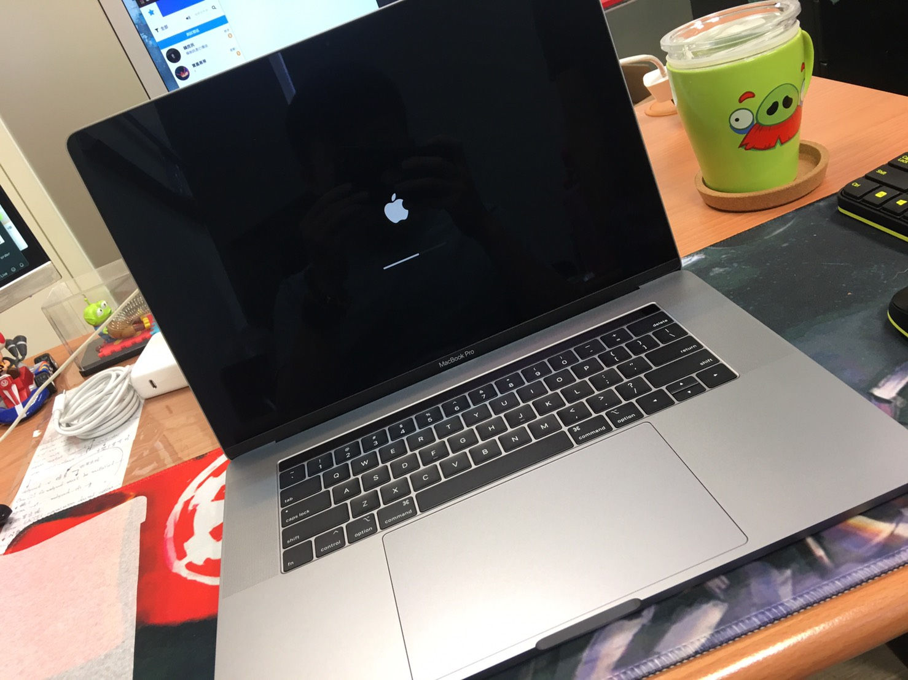
安裝目標
基本程式
開發環境建置
本篇以第二項為主，關於第一項會在另一篇文章
安裝 PHP7.2
首先安裝一定會用到的 PHP，目前最穩定版本為 7.2 所以輸入以下指令開始安裝：
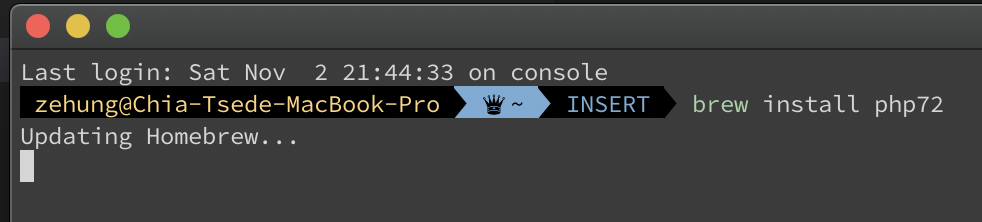
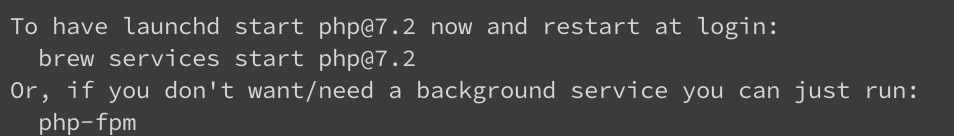
PHP 環境變數設定
接下來把 PHP 的環境變數加到 ~/.zshrc 或 ~/.bashrc
1
2
3
| $ vi ~/.zshrc
# 使用 brew 安裝的 php (這行是註解)
export PATH=/usr/local/opt/php@7.2/bin:$PATH;
|
確定有無安裝成功
1
| php -v // 確認安裝成功 (7.2.24 或 更高)
|
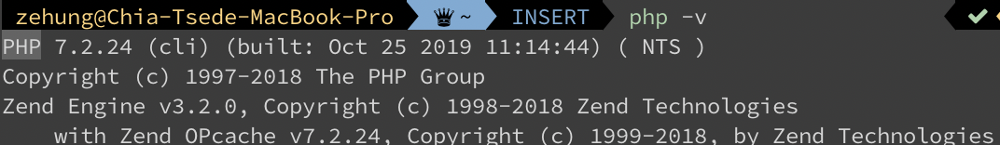
修改 php-fpm 設定
先輸入下面這行：
1
| vi /usr/local/etc/php/7.2/php-fpm.d/www.conf
|
接著更新內容：
1
2
3
4
5
6
7
| # 這邊的 user 及 listen.owner 改為自已的 Mac user
user = rexhung
group = staff
listen.owner = rexhung
listen.group = staff
listen.mode = 0660
|
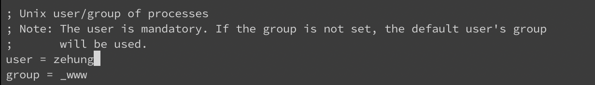
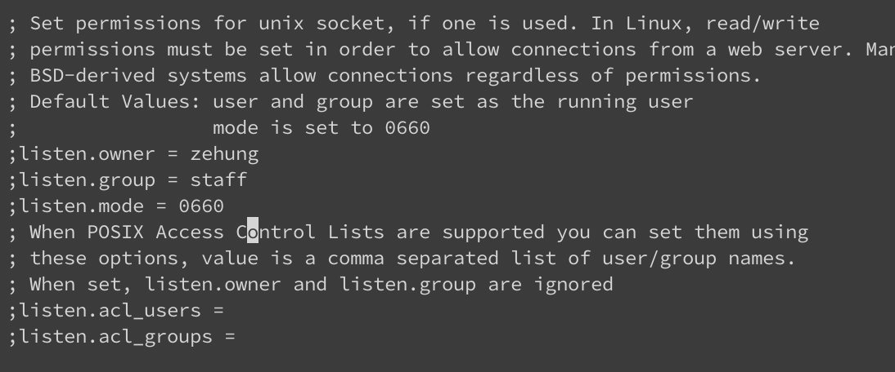
修改結束後執行
1
2
3
4
| # 開始背景執行 php fpm
brew services start php72
# 列出目前所有使用 brew 執行的 services
brew services list
|
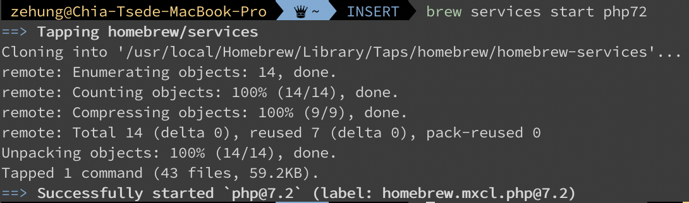
安裝 MYSQL5.7
一樣在終端機輸入：
MYSQL 環境變數設定
將環境變數加到 ~/.zshrc 或 ~/.bashrc
1
2
3
| # ~/.bashrc
# 使用 brew 安裝的 mysql 5.7
export PATH=/usr/local/opt/mysql@5.7/bin:$PATH
|
接著修改完後輸入：
1
2
3
4
| # 開始背景執行 mysql5.7
brew services start mysql@5.7
# 列出目前所有使用 brew 執行的 services
brew services list
|
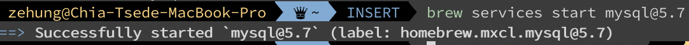
修改 MYSQL 密碼
剛安裝完成後的 MYSQL 密碼預設都是空白的，需要更改只需要輸入：
1
| mysql -u root -p # 登入 mysql
|
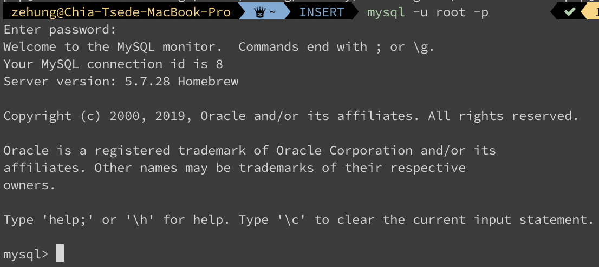
接著進去後輸入下方指令修改密碼：
1
2
| # 登入 mysql 後執行
set password for '使用者帳號'@'localhost'=password('新密碼');
|
這邊必須要修改密碼，如果不修改密碼會無法登入資料庫(資料庫會檢查密碼是否為空)
安裝 Nginx
接著輸入下方指令安裝 Nginx
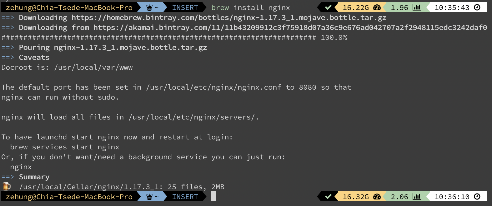
設定檔位置在 /usr/local/etc/nginx/
設定檔的內容如下：
1
2
3
4
5
6
7
8
9
10
11
12
13
14
15
16
17
18
19
20
21
22
23
24
25
26
27
28
29
30
31
32
33
34
35
36
37
38
39
40
41
42
43
44
45
46
47
48
49
50
51
52
53
54
55
56
| # /usr/local/etc/nginx/nginx.conf
#user nobody;
worker_processes 1;
#error_log logs/error.log;
#error_log logs/error.log notice;
#error_log logs/error.log info;
#pid logs/nginx.pid;
events {
worker_connections 1024;
}
http {
include mime.types;
default_type application/octet-stream;
#log_format main '$remote_addr - $remote_user [$time_local] "$request" '
# '$status $body_bytes_sent "$http_referer" '
# '"$http_user_agent" "$http_x_forwarded_for"';
#access_log logs/access.log main;
error_log /var/log/nginx/error.log; # <===== 這是你放 log 的地方 可以更改
sendfile on;
client_max_body_size 5G;
#tcp_nopush on;
#keepalive_timeout 0;
keepalive_timeout 300;
send_timeout 600;
fastcgi_connect_timeout 300;
fastcgi_send_timeout 300;
fastcgi_read_timeout 300;
fastcgi_buffer_size 256k;
fastcgi_buffers 8 256k;
fastcgi_busy_buffers_size 512k;
fastcgi_temp_file_write_size 256k;
proxy_connect_timeout 300;
proxy_read_timeout 300;
proxy_send_timeout 300;
proxy_buffer_size 256k;
proxy_buffers 8 256k;
proxy_busy_buffers_size 512k;
proxy_temp_file_write_size 256k;
#gzip on;
include /usr/local/etc/nginx/sites-enabled/*.conf;
}
|
之後如果有新的站，就要加 nginx conf. 到 /usr/local/etc/nginx/sites-enabled/
![步驟一個一個來]](sites-enabled.png)
詳細 Nginx 歡迎參考 Arriby大神 的 Blog.
小提示
請記得如果有把 log 加到 var 的資料夾內的話，要給予他權限，比如上方的 nginx.config 你就需要給他權限，方法如下：
最後輸入 ls -al 可以查看所有賦予權限的檔案。
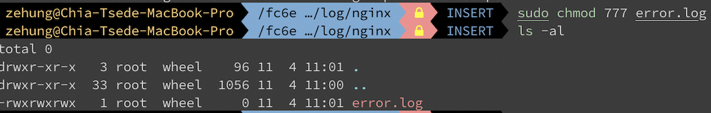
執行 Nginx
1
2
3
4
| # 開始背景執行 nginx
brew services start nginx
# 列出目前所有使用 brew 執行的 services
brew services list
|
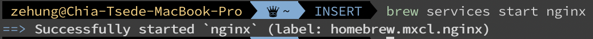
檢查狀態
在這邊你可以輸入 brew services list 檢查上面安裝的三個東西有沒有順利進行起來。
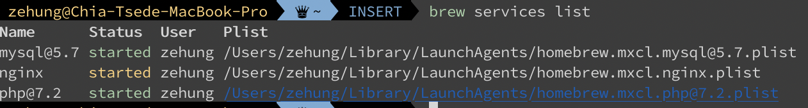
如果像上方有出現黃色的字代表沒有成功啟動，記得可以關掉再重啟，或是輸入下方程式碼，不用整個關掉再啟動：
安裝 PHPRedis
到最後一個步驟了，還記得之前我們有篇文章的筆記是關於 PHPRedis 嗎？忘記可以再去看看哦！
因為之前舊的 PHP 版本沒有內建 pecl 而 7.2 之後就有內建了，這邊就無需要安裝繁瑣的步驟。
這時候只要鍵入 pecl 就會正常輸出：
1
2
3
4
5
6
7
8
9
10
11
| # 順便連 xdebug 一起安裝，版本可見 https://pecl.php.net/package/xdebug
pecl install xdebug-2.8.0
# 安裝 Igbinary，版本可見 https://pecl.php.net/package/igbinary
pecl install igbinary-3.0.1
# 使用 brew 安裝 Redis
brew install redis
# 安裝 phpredis，版本可見 https://pecl.php.net/package/redis
# 會被詢問兩個問題
# enable igbinary serializer support? [no]: yes
# enable lzf compression support? [no]: no
pecl install redis-5.1.0
|
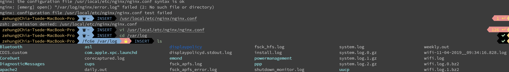
修改 php.ini 設定檔
接著到 php.ini 檔最上方查看會發現多了幾行：
1
2
3
| extension="redis.so"
extension="igbinary.so"
zend_extension="xdebug.so"
|
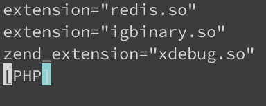
接著把這三行刪除掉(dd掉)，鍵入下方的程式碼：
1
2
3
4
5
6
7
8
9
10
11
12
13
14
15
16
17
18
19
20
21
22
23
24
25
| ; CUSTOM variables
short_open_tag = Off
expose_php = Off
error_reporting = E_ALL & ~E_STRICT
display_errors = On
error_log = "/usr/local/log/php/php_errors.log" # php log 位置
upload_tmp_dir = "/tmp/"
allow_url_fopen = on
[xdebug]
zend_extension="xdebug.so"
xdebug.remote_enable=1
xdebug.remote_autostart=1
xdebug.remote_host=localhost
xdebug.remote_handler=dbgp
xdebug.remote_port=9000
[redis]
extension="igbinary.so"
extension="redis.so"
# 如果 session 要用 redis
# session.save_handler = "redis"
# session.save_path = "tcp://127.0.0.1:6379?weight=1&timeout=2.5"
|
確認安裝完成
最後輸入下方指令檢查 phpinfo 有沒有 redis ，有則成功！
1
2
3
4
| # 開始背景執行 redis
brew services start redis
# 列出目前所有使用 brew 執行的 services
brew services list
|
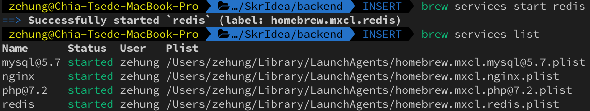
在最後輸入 brew services list 之後你應該至少會看見三個程式在執行當中。
Conclusion & 結論
這是這次環境建置的小筆記，比上次的省略還多，圖片方面還在想辦法找圖床上傳，目前上傳至 Hexo 所以載入會比較慢，文字部分就加減參考囉，如果有什麼問題也歡迎留言告知我～